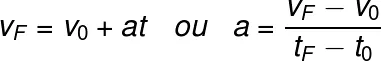

O conceito de eletricidade é abrangente, mas podemos compreendê-lo como todos os efeitos que as cargas elétricas
produzem sobre a matéria. A eletricidade é comumente associada à corrente elétrica, uma movimentação de cargas
que é estabelecida quando algum corpo é submetido a uma diferença de potencial elétrico.
A origem dos fenômenos elétricos está nos elétrons, que apresentam a menor carga elétrica possível, conhecida
como carga fundamental, que vale cerca de 1,6.10-19 C. Quando excitados ou sob a ação de um campo elétrico
externo, os elétrons podem ser conduzidos, dando origem a correntes elétricas e toda a gama de fenômenos
relacionados à eletricidade.
A energia potencial elétrica é medida em joules, ou em kWh, que é uma unidade mais comum, usada como o parâmetro
pelas companhias de distribuição de energia elétrica. A energia contida em um kWh tem um valor econômico, que
pode ser diferente em cada região, de acordo com as dificuldades técnicas da distribuição de energia ou ainda,
com a demanda local. A energia contida em 1 kWh é igual a 3,6.106 J.
Fórmulas de eletricidade
Nesta seção, trazemos as principais fórmulas relacionadas à eletricidade, confira:
A corrente elétrica que atravessa um condutor pode ser calculado por meio da seguinte expressão:
i – corrente elétrica (A)
ΔQ – carga elétrica (C)
Δt – intervalo de tempo (s)
A tensão elétrica ou potencial elétrico que uma carga produz a uma distância d, medida a partir de seu centro, é
calculada por meio da fórmula:
U – potencial elétrico (V)
k0 – constante eletrostática do vácuo (9.109 Nm²/C²)
Q – carga elétrica (C)
d – distância (m)
O campo elétrico produzido por uma carga puntiforme é uma grandeza vetorial e pode ter seu módulo calculado pela
fórmula a seguir:
E – campo elétrico (N/C)
A força elétrica entre duas cargas puntiformes, separadas por uma distância d, é calculada pela fórmula a
seguir:
Q e q – cargas elétricas
A relação entre o campo elétrico e a força elétrica descrita pela Lei de Coulomb é mostrada na expressão:
A energia potencial elétrica proveniente da interação de cargas puntiformes separadas por uma distância d é
calculada pela fórmula a seguir:
O potencial elétrico, escrito em termos da energia potencial elétrica, é definido por meio da fórmula a
seguir:
A energia elétrica consumida por algum aparelho, de potência elétrica P, pode ser calculado por meio da
fórmula
abaixo:
EEL – energia elétrica consumida
P – potência
Δt – tempo
Exercicios sobre eletricidade
Hidrostática
Hidrostática é uma área da Física que explica o comportamento dos fluidos em condições de equilíbrio estático.
Essa área envolve a aplicação de conceitos como pressão e densidade por meio de leis matemáticas, tais como os
teoremas de Pascal e Arquimedes.
Os conceitos mais importantes da hidrostática são:
densidade;
pressão;
empuxo.
Pressão
A pressão hidrostática é aquela em que um fluido exerce contra as paredes de seu recipiente. Essa pressão é
diretamente proporcional à profundidade desse fluido – quanto mais fundo, maior é a pressão.
De acordo com o Teorema de Pascal, a pressão é distribuída uniformemente ao longo de um fluido e todos os pontos
que se encontram na mesma profundidade estão sujeitos à mesma pressão. Uma forma de visualizar esse teorema na
prática é observando o formato adquirido por uma bexiga ou uma bola. Quando cheias, adotam o formato esférico,
já que no interior do fluido (ar, nesse caso), a pressão é distribuída igualmente em todos os pontos.
As unidades de medida de pressão mais utilizadas são o pascal e o atm. O pascal equivale a uma força de 1
newton aplicada a uma área de 1 m², e o atm tem o valor da pressão atmosférica ao nível do mar (cerca de 1.105
Pa). Outra unidade, não tão cotidiana quanto o atm, é o centímetro de mercúrio (cmHg) ou ainda o milímetro de
mercúrio (mmHg), que ainda estão presentes nos aparelhos que medem a pressão arterial (esfigmomanômetros) e
também nos medidores de pressão de cilindros e botijões de gás.
A partir da fórmula acima, relacionamos os pontos 1 e 2 de um fluido localizados na mesma profundidade por meio
da pressão, que pode ser calculada pela razão entre força e área.
Densidade
Densidade é um importante parâmetro para o estudo dos fluidos e para a hidrostática. Ela mede a quantidade de
matéria contida em um certo volume, isto é, contida no espaço ocupado por um corpo ou por um fluido.
A densidade é definida com base na água pura, em temperatura ambiente. Atribuímos a essa substância, que é
abundante e facilmente encontrada em qualquer região do planeta, a densidade de 1 kg/L, 1 g/cm³ ou 1000 kg/m³.
A partir da densidade de uma substância, também é possível descobrir se ela flutuará ou se afundará quando
abandonada na água. Corpos mais densos que a água afundam, e corpos menos densos que a água flutuam.
É muito simples calcular a densidade de um material: basta dividir a massa pelo seu volume. Portanto, a fórmula
da densidade é:
Empuxo é a força que os fluidos fazem sobre os objetos que são mergulhados em seu interior. Quando tentamos
colocar uma bola dentro d'água, logo percebemos que uma grande força tende a expulsá-la à medida que ela afunda.
O empuxo tem valor igual ao peso do fluido que foi deslocado, devido à entrada de um corpo em um fluido. Essa
força aponta para cima e é dependente do volume imerso (a porção do corpo que se encontra dentro do fluido), da
densidade do fluido, bem como da aceleração da gravidade.
Fórmula do empuxo:
Ondas
Características das Ondas:
Para caracterizar as ondas usamos as seguintes grandezas:
Amplitude: corresponde à altura da onda, marcada pela distância entre o ponto de equilíbrio
(repouso) da onda até a crista. Note que a “crista” indica o ponto máximo da onda, enquanto o “vale”, representa
a ponto mínimo. Comprimento de onda: Representado pela letra grega lambda (λ), é a distância entre dois vales
ou duas cristas sucessivas. Velocidade: representado pela letra (v), a velocidade de uma onda depende do meio em que ela
está se propagando. Assim, quando uma onda muda seu meio de propagação, a sua velocidade pode mudar. Frequência: representada pela letra (f), no sistema internacional a frequência é medida em
hertz (Hz) e corresponde ao número de oscilações da onda em determinado intervalo de tempo. A frequência de uma
onda não depende do meio de propagação, apenas da frequência da fonte que produziu a onda. Período: representado pela letra (T), o período corresponde ao tempo de um comprimento de onda.
No sistema internacional, a unidade de medida do período é segundos (s).
Tipos de Ondas
Quanto à natureza, há dois tipos de ondas:
Ondas Mecânicas: para que haja propagação, as ondas mecânicas necessitam de um meio material, por exemplo, as
ondas sonoras e as ondas em uma corda.
Ondas Eletromagnéticas: nesse caso, não é necessário que haja um meio material para que a onda se propague, por
exemplo, as ondas de rádio e a luz.
Segundo a direção de propagação das ondas, elas são classificadas em: Ondas Unidimensionais: as ondas que se propagam em uma direção. Exemplo: ondas em uma corda. Ondas Bidimensionais: as ondas que se propagam em duas direções. Exemplo: ondas se propagando na superfície de um lago. Ondas Tridimensionais: as ondas que se propagam em todas as direções possíveis. Exemplo: ondas sonoras.
As ondas também podem ser classificadas de acordo com a direção de vibração: Ondas Longitudinais: a vibração da fonte é paralela ao deslocamento da onda. Exemplo: ondas sonoras Ondas Transversais: a vibração é perpendicular à propagação da onda. Exemplo: onda em uma corda.
Fórmulas
Relação entre período e frequência
O período é o inverso da frequência.
Assim:
Velocidade de propagação
A velocidade também pode ser calculada em função da frequência, substituindo o período pelo inverso da
frequência.
Temos: Exemplo
Qual o período e a velocidade de propagação de uma onda que apresenta frequência de 5Hz e comprimento de onda de
0,2 m?
Como o período é o inverso da frequência, então:
Para calcular a velocidade usamos o comprimento de onda e a frequência, assim:
Fenômenos Ondulatórios
Reflexão - Uma onda se propagando em um determinado meio ao se deparar com um obstáculo pode
sofre reflexão, isto é inverter o sentido da propagação. Ao sofrer reflexão, o comprimento de onda, a velocidade
de propagação e a frequência da onda não se alteram. Um exemplo é quando uma pessoa grita em um vale e escuta
alguns segundos depois o eco da sua voz. Através da reflexão da luz conseguimos ver nossa própria imagem em uma
superfície polida.
Refração - A refração é um fenômeno que acontece quando uma onda muda o meio de propagação.
Nesse caso, poderá ocorrer uma mudança no valor da velocidade e na direção de propagação.
As ondas em uma praia se quebram paralelamente a orla, devido ao fenômeno da refração. A mudança de profundidade
da água (meio de propagação) faz com que a direção das ondas se modifique, tornando-as paralela a orla da praia.
Difração - As ondas contornam obstáculos. Quando isso ocorre dissemos que a onda sofreu
difração.
A difração nos permite ouvir por exemplo uma pessoa que está do outro lado de um muro.
Interferência - Quando duas ondas se encontram, ocorre uma interação entre suas amplitudes
chamada de interferência. A interferência pode ser construtiva (aumento da amplitude) ou destrutiva (diminuição
da amplitude).
Ondas Estacionárias - As ondas estacionárias ocorrem da superposição de ondas periódicas iguais
e de sentidos contrários. Ao ocorrer interferência construtiva e destrutiva, apresentam pontos que vibram e
outros que não vibram. Podemos produzir ondas estacionárias em uma corda com as extremidades fixas, como por
exemplo, nas cordas de um violão.
Óptica
A óptica é uma área da física que busca compreender um grande número de fenômenos relacionados à luz. Em vista
disso, ela pode ser compreendida como um caso particular da ondulatória, que estuda o comportamento das ondas de
todo o espectro eletromagnético e não somente da luz visível.
Óptica geométrica
A óptica geométrica interpreta a luz como segmentos de reta, chamados raios de luz. Os raios de
luz são usados para ilustrar a direção e o sentido de propagação da luz. Grande parte dos fenômenos luminosos
que observamos em nosso cotidiano pode ser explicada unicamente com as contribuições da óptica geométrica, como
as sombras, os eclipses e a reflexão da luz.
A óptica geométrica faz uso de uma concepção de luz relativamente simples, por isso, por meio dela podemos
explicar facilmente como ocorre a formação de imagens em sistemas ópticos refletores, como espelhos planos e
esféricos, mas também em sistemas ópticos refratores, como lentes delgadas, prismas e outros.
Princípios da óptica geométrica
Esses princípios explicam como os raios de luz comportam-se em diversas situações. Eles são válidos sob
condições específicas que envolvem meios ópticos homogêneos (de índice de refração constante) e isotrópicos (que
apresentam as mesmas propriedades, independentemente da direção). Conheça cada um desses princípios:
⚈Princípio da propagação retilínea da luz: os raios de luz propagam-se em linha reta.
⚈Princípio da independência dos raios de luz: ao cruzarem-se, dois raios de luz
atravessam um ao outro como se inexistissem mutuamente.
⚈Princípio da reversibilidade dos raios de luz: o sentido de propagação dos raios de luz
é reversível.
Óptica ondulatória
É a divisão da óptica que interpreta a luz como uma onda eletromagnética, com frequência e comprimento de onda
bem definidos. A óptica ondulatória permite a compreensão de fenômenos que não podem ser explicados pela óptica
geométrica, tais como a interferência, difração, polarização etc.
Conceitos importantes da óptica
Conceitos fundamentais para o seu estudo da óptica
Fontes de luz
Chamamos de fonte de luz qualquer corpo que emana luz. Existem basicamente dois tipos de fontes de luz:
primárias e secundárias:
⚈Fontes primárias: são os corpos que produzem luz, também chamados de corpos luminosos. A
luz pode ser produzida por diferentes processos, tais como a termoluminescência e a luminescência, que envolve
diversos fenômenos de emissão de luz em baixas temperaturas. São exemplos de fontes primárias: o Sol e outras
estrelas, a chama de uma vela, uma lâmpada acesa, a resistência de uma churrasqueira elétrica ligada etc.
⚈Fontes secundárias: são os corpos que apenas refletem a luz que incide sobre eles e, por
isso, são conhecidos como corpos iluminados. São exemplos de fontes secundárias: a Lua, seres humanos,
vegetais etc. Além das classificações relacionadas à forma como a luz emerge dos corpos, as fontes de luz podem ser
divididas entre fontes puntiformes e fontes extensas, confira:
⚈Fontes puntiformes: são aquelas que têm dimensões desprezíveis, ou seja, são muito
pequenas em relação ao observador. Exemplos: as estrelas, o pixel de uma televisão, uma lanterna acesa a
vários quilômetros de distância etc.
⚈Fontes extensas: são fontes de luz cujo tamanho não pode ser desconsiderado, pois suas
dimensões são comparáveis às do cenário que é iluminado. Exemplos: Sol e Lua.
Cores
Quando uma luz branca incide sobre algum objeto, parte dela é absorvida por ele. Essa luz que foi absorvida pode
ser transmitida diretamente para os átomos, excitando-os e fornecendo-lhes energia térmica, por exemplo. No
entanto, parte da luz incidente será refletida de volta, e é essa parte que define a cor dos corpos iluminados,
portanto, quando olhamos para uma bola vermelha, só a vemos assim porque seus átomos não são capazes de absorver
a luz vermelha.
As cores são também a forma como o cérebro interpreta os estímulos visuais. O olho humano é capaz de detectar um
intervalo de frequências de ondas eletromagnéticas conhecido como radiação visível, que se estende entre o
infravermelho e a radiação ultravioleta.
O olho humano conta com diferentes tipos de células sensíveis a três picos de frequência, que correspondem às
cores verde, vermelho e azul. É com base na combinação desses três estímulos que o cérebro humano “cria” a nossa
percepção das cores.
Luz monocromática
É aquela que apresenta idealmente uma única frequência, ou seja, uma única cor. A luz branca, por exemplo, é
policromática, ou seja, é composta por diversas frequências de luz.
Meios ópticos
Podem ser transparentes, translúcidos ou opacos, vamos conferir as características de cada um deles:
⚈Meios transparentes: são aqueles em que a luz consegue ser transmitida com pouca ou
nenhuma perda de intensidade, além disso, é possível enxergar com nitidez através deles. São exemplos: vácuo,
ar, vidro etc.
⚈Meios translúcidos: permitem a transmissão parcial da luz, no entanto, não é possível
enxergar através desses meios com nitidez. São exemplos: névoa, papel vegetal, vidro fosco etc.
⚈Meios opacos: interrompem a passagem da luz, refletindo-a ou absorvendo-a. São exemplos:
paredes, ossos, metais etc. A opacidade de um meio óptico depende de muitos fatores, como a densidade e a
distância percorrida pela luz, mas também depende da frequência dela. Alguns meios são opacos apenas para
algumas frequências, ou seja, barram a passagem de certas cores.
Sistemas ópticos
São meios ópticos dispostos em formas e tamanhos diferentes, usados para manipular a direção da propagação da
luz. Existem sistemas ópticos refletores e refratores.
Sistemas ópticos refletores: superfícies polidas, espelhos planos, espelhos esféricos etc. Sistemas ópticos refratores: dioptros planos, lentes esféricas côncavas e convexas etc.
Sombra e penumbra
As sombras são produzidas quando algum meio opaco intercepta os raios de luz. Quando isso acontece, forma-se uma
região do espaço onde não há incidência direta dos raios de luz, essa região é chamada de sombra.
A penumbra, por sua vez, é parcialmente iluminada pelos raios de luz e localiza-se em uma região de transição
entre a sombra e a luminosidade. As penumbras são produzidas quando objetos opacos são iluminados por fontes
extensas de luz. Se quiser aprofundar-se mais na formação desses efeitos, leia: Sombra e penunbra.
Fenômenos ópticos
São eventos que podem ser observados e que ocorrem pela interação da luz com a matéria. Confira as propriedades
dos principais fenômenos desse tipo:
Reflexão
Ocorre quando a luz incide sobre uma superfície refletora e retorna para o seu meio de propagação de origem.
Existem dois tipos de reflexão: regular e difusa. Na reflexão regular, os ângulos de incidência e reflexão são
iguais, e os raios incidente e refletido encontram-se no mesmo plano, possibilitando a formação de imagens
refletidas. Já na reflexão difusa, não é possível enxergar imagens refletidas.
Refração
É caracterizada pela passagem da luz através de dois meios de diferentes índices de refração. Quando a luz
atravessa meios com diferentes refringências, sua velocidade de propagação muda, fazendo com que possam ocorrer
desvios laterais em sua trajetória. Quer saber mais sobre esse tipo de fenômeno óptico, leia: Refração da luz.
Absorção
É o fenômeno em que uma parte ou até mesmo toda a luz incidente sobre um corpo é absorvida. Corpos capazes de
absorver toda a luz incidente sobre ele são conhecidos como corpos negros. A maioria dos corpos, entretanto, não
são negros, isto é, absorvem somente uma parte da luz incidente. A cor das fontes secundárias de luz é
determinada pelo espectro de absorção daquele corpo, ou seja, pela sua capacidade de absorver determinadas
frequências da luz visível.
Transmissão
É um processo em que a luz atravessa um meio óptico translúcido ou transparente. Quando a luz é transmitida
através desses tipos de meios, sua velocidade pode mudar, bem como sua direção de propagação, o que caracteriza
uma refração.
Difração
Ocorre quando a luz atravessa uma fenda de dimensões parecidas com seu comprimento de onda. Quando isso
acontece, a fenda passa a produzir frentes de ondas circulares. Além disso, a diferença entre os espaços
percorridos pelas frentes de ondas esféricas produz um padrão de interferência, que produz regiões de alta
intensidade luminosa, seguidas de regiões de baixa intensidade luminosa. Para aprofundar-se a respeito dessa
propriedade das ondas, leia: Difração.
Interferência
É um fenômeno em que a diferença de fase entre duas ou mais ondas produz regiões de alta ou baixa intensidade
luminosa. Chamamos de interferência construtiva a interação entre ondas que produz ondas de maior amplitude; e
de interferência destrutiva, a produção de ondas de amplitude mais baixa ou até mesmo nula em alguns pontos do
espaço.
Polarização
É o nome que se dá ao processo que seleciona qual deve ser a direção de oscilação do campo elétrico de uma onda
eletromagnética. Para que isso aconteça, a onda deve passar através de um polarizador, que eliminará todas as
componentes do campo elétrico que não oscilem na direção desejada.
Usinas/ instalações residenciais
É muito complicado imaginar como viver sem a eletricidade, já que o seculo XXI é marcado pelo avanço tecnológico
no Brasil e no Mundo.
Existem diversos tipos de energias, sendo elas: hidráulica, eólica, solar, térmica e nuclear.
Para cada um desses exemplos, há usinas que transformarão essas energias em energia elétrica.
Como o Brasil é um país que conta com muitos rios, a eletricidade majoritariamente é gerada a partir de energia hidráulica, por meio das usinas hidrelétricas. Nessas usinas, a energia potencial gravitacional da água é convertida em energia cinética de rotação por uma turbina rotatória. Por fim, a energia cinética é transformada em elétrica por um gerador.
Já a energia eólica consiste na captação da energia dos ventos, transformando-as em energia elétrica. Normalmente são usados moinhos ou cataventos para captar a energia cinética dos ventos, após esse processo, as turbinas são responsáveis pela conversão para energia mecânica e, depois, para elétrica. Vale lembrar que a energia eólica é a que menos polui a atmosfera, pois não produz gases de efeito estufa.
A energia solar, como o próprio nome sugere, transforma a energia do sol em elétrica. Normalmente são usados painéis de células fotovoltaicas, que são capazes de transformar energia solar em elétrica através do efeito fotoelétrico. As usinas heliotérmicas, dispõem de um outro método que consiste no aquecimento de um receptor por meio de raios solares, o calor gerado converte a energia solar em elétrica, graças a uma turbina.
A energia térmica está estritamente relacionada a temperatura absoluta de um sistema. Usinas termoelétricas usam da energia térmica para gerar energia elétrica através de qualquer produto que possa gerar calor, seja carvão, óleos naturais, etc.
A energia nuclear é obtida através de uma reação nuclear para se obter energia elétrica. A energia vem de uma matéria prima não renovável: urânio, que por meio da fissão dos átomos desse material, é gerado calor. Esse calor aquece as águas que se tornam em vapor para movimentar uma turbina a vapor e assim, gerar energia elétrica.
Atualmente, o Brasil gera energia elétrica por meio de usinas: hidrelétricas, termoeletricas e termonucleares. Por ser um dos assuntos mais cobrados do ENEM, a probabilidade de cair na prova desse ano é muito alta e suas questões não são difíceis; portanto, muito foco ao resolver questões sobre energias.
Calorimetria
Calorimetria é a área da Física responsável pelo estudo das trocas de energia térmica em forma de calor que ocorrem entre dois ou mais corpos e suas vizinhanças. Por meio da Calorimetria, é possível saber qual é a temperatura de equilíbrio de um sistema de corpos e qual é a quantidade de energia térmica necessária para que se observem variações de temperatura ou mudanças de estado físico no sistema.
O que é calor?
Calor é energia térmica em trânsito. Quando dois corpos estão em contato térmico, ocorre transferência de calor entre eles até que se estabeleça o equilíbrio térmico. O equilíbrio térmico, por sua vez, é a situação em que os dois corpos atingem a mesma temperatura. Além disso, o calor sempre flui do corpo de maior temperatura para o corpo de menor temperatura.
Entendemos por contato térmico qualquer meio existente entre dois ou mais corpos que permita a transferência de calor entre eles por um dos seguintes processos: contato, convecção e indução. Quaisquer transferências de calor entre dois corpos ocorrem segundo um ou mais desses processos.
Fórmulas para calcular o calor
Calor sensível
Quando um corpo tem a sua temperatura alterada, podendo também sofrer mudanças em suas dimensões, dizemos que ele recebeu somente calor sensível. Portanto, o calor do tipo sensível é capaz de variar a temperatura de um corpo, alterando ou não as suas dimensões, por meio do processo de dilatação térmica.
A fórmula utilizada para calcular o calor sensível é esta:
Q – Quantidade de calor (J ou cal)
m – Massa do corpo (kg ou g)
c – Calor específico (J/kg.K ou cal/gºC)
ΔT – Variação de temperatura (K ou ºC)
Calor específico
Uma grandeza importante está presente na equação acima, o calor específico, representado pela letra c. Calor específico é uma unidade que indica a quantidade de calorias necessárias para se elevar em 1,0 ºC uma massa de 1,0 g de determinada substância. Essa unidade é medida com referência na água pura, cujo calor específico é igual a 1,0 cal/gºC.
Capacidade térmica
Capacidade térmica é uma grandeza física utilizada para definir a quantidade de calor que um corpo deve receber, ou ceder, para que a sua temperatura varie em 1,0 ºC ou 1,0 K. Diferentemente do calor específico, essa grandeza está relacionada com o corpo como um todo, e não somente com cada grama de sua composição. Por essa razão, dizemos que calor específico é uma propriedade da substância, enquanto a capacidade térmica é uma propriedade do corpo em si.
Calor latente
Calor latente, ou calor de transformação, é a quantidade de calor recebida por um corpo durante uma mudança de estado físico. Se algum corpo constituído apenas por uma única substância sofrer mudanças em seu estado físico, passando do estado sólido para o estado gasoso, por exemplo, ele recebeu calor latente. Durante a mudança de estado físico, todo o calor que um corpo recebe, ou cede, somente altera o seu estado, sem afetar a sua temperatura. Quando a água atinge a temperatura de fervura, por exemplo, sob condições normais de pressão, sua temperatura permanece constante enquanto ela sofre o processo de vaporização.
Para calcularmos a quantidade de calor latente em alguma mudança de estado físico, usamos a seguinte fórmula:
Fluxo de calor
Fluxo de calor, ou fluxo térmico, é uma grandeza que fornece a taxa de passagem de calor através de alguma área. O fluxo de calor é definido no Sistema Internacional de Unidades em Joules por segundo (J/s), e o seu símbolo é geralmente a letra grega Φ.
A fórmula usada para o cálculo do fluxo de calor está representada a seguir:
Curva de aquecimento
Toda substância pura pode ter a sua curva de aquecimento facilmente determinada. A curva de aquecimento é um gráfico da temperatura da substância em função da quantidade de calor recebida ou fornecida. Durante o aquecimento ou resfriamento da substância, o gráfico toma a forma de uma reta ascendente ou descendente. Nas mudanças de fase, tem a forma de uma reta paralela ao eixo horizontal. Observe:
I – Substância no estado sólido sendo aquecida: calor sensível;
II – Substância em processo de fusão: calor latente de fusão;
III – Substância no estado líquido sendo aquecida: calor sensível;
IV – Substância sofrendo evaporação: calor latente de evaporação.
Trocas de calor
Dizemos que, em um sistema fechado, a soma das trocas de calor entre os corpos é nula, isto é, igual a 0. Essa propriedade decorre da conservação da energia: toda a quantidade de calor cedida pelo corpo de maior temperatura é absorvida pelos corpos com menores temperaturas.
Dessa forma, podemos escrever a seguinte relação:
Acústica
Acústica é a uma área de estudo da Física que estuda todos os aspectos relacionados às ondas mecânicas, como o som, o ultrassom e as vibrações que se propagam em meios sólidos, líquidos e gasosos. Ela se concentra no estudo de fenômenos como a propagação, reflexão, absorção e interferência entre ondas sonoras.
Som
O som é uma onda mecânica e, por esse motivo, só é capaz de se propagar em meios materiais, como ar, água ou em metais. A propagação do som é tridimensional, e uma onda sonora propaga-se de forma circular em um meio homogêneo, percorrendo distâncias iguais em todas as direções. Além disso, o som é uma onda transversal, isto é, as ondas sonoras viajam na mesma direção da perturbação que as originou.
Os sons audíveis pelos seres humanos se encontram dentro de um intervalo de frequências chamado de espectro audível. Essas frequências distribuem-se, na média, entre 20 Hz e 20.000 Hz. Sons de frequências inferiores a 20 Hz são chamados de infrassons, enquanto os sons de frequência superior a 800 Hz são conhecidos como ultrassons.
A detecção de ultrassons e infrassons é usada em uma grande quantidade de tecnologias e as aplicações são muitas:
⚈Detecção de abalos sísmicos;
⚈Realização de exames;
⚈Estudo de estruturas subterrâneas etc.
A velocidade de propagação das ondas sonoras é uma característica do meio em que essas ondas viajam. Tal característica depende de fatores como densidade, temperatura e elasticidade do meio. Geralmente, as ondas sonoras se propagam mais rapidamente nos meios sólidos, como nos metais.
Fórmulas de acústica
As fórmulas de acústica são utilizadas para calcular características do som, como velocidade de propagação, frequência, comprimento de onda, intensidade sonora etc.
v – velocidade do som (m/s)
λ – comprimento de onda (m)
f – frequência (Hz)
A fórmula a seguir é utilizada para determinar o nível de intensidade sonora som em decibéis:
I0 – limiar da audição humana (10-12 W/m²)
I – intensidade sonora (W/m²)
A fórmula a seguir é usada para calcular a frequência aparente, quando uma fonte sonora se move em relação a um observador:
f – frequência aparente (Hz)
f0 – frequência da fonte emissora (Hz)
vS – velocidade do som (m/s)
vF – velocidade da fonte sonora (m/s)
vM – velocidade do meio (m/s)
A acústica tem aplicações diretas na música, e uma delas é o estudo dos harmônicos em cordas e em tubos sonoros, usados em grande parte dos instrumentos musicais.
Mecânica
Mecânica é uma grande área da física que se concentra no estudo do movimento e repouso dos corpos, estejam estes ou não sob a ação de forças. A mecânica divide-se nas áreas de cinemática, dinâmica e estática. Praticamente todos os movimentos que acontecem em nosso cotidiano podem ser descritos pelas equações dessa área.
O estudo da mecânica é de grande importância para uma enorme gama de profissões, além de ser o conteúdo de física que é mais cobrado no Exame Nacional do Ensino Médio (Enem). Alguns profissionais lidam diariamente com ela, como engenheiros civis, engenheiros agrônomos, engenheiros mecânicos, engenheiros hidráulicos, arquitetos, pilotos de avião, físicos e outros.
O que a mecânica estuda?
O objeto do estudo da mecânica é o movimento, por isso se trata de uma área de estudo bastante extensa. Dentre as diversas possibilidades de estudo, destacamos algumas que foram desenvolvidas pela pesquisa em mecânica:
As órbitas de planetas, satélites e asteroides, descritas pela lei da gravitação universal e pelas leis de Kepler.
A trajetória de foguetes, balas, dardos e flechas explicada por meio das equações de lançamento de projéteis.
⚈O escoamento de fluidos, descrito pela equação da continuidade, capaz de explicar o voo dos aviões bem como as situações hidrostáticas, em que os fluidos encontram-se em repouso.
⚈O funcionamento de máquinas simples, tais como planos inclinados, roldanas, talhas, balanças etc.
⚈A trajetória de partículas eletricamente carregadas movendo-se sob a ação de campos elétricos e magnéticos, como ocorre no fenômeno da aurora boreal.
⚈Corpos em queda livre ou até mesmo corpos que caem acelerados pela gravidade, mas que sofrem a ação da resistência do ar.
Cinemática
Cinemática é a área da mecânica que estuda o movimento dos corpos sem levar em conta as causas desse movimento. Em outras palavras, estuda-se situações que ocorrem a partir do instante em que um corpo inicia o seu estado de movimento.
No âmbito da cinemática, que é vista no Ensino Médio, estuda-se os seguintes tipos de movimento:
Movimento uniforme
Movimento uniforme é aquele em que a velocidade de um corpo é constante, deslocando-se apenas em linha reta. A principal equação usada para o estudo do movimento uniforme é a função horária da posição, mostrada a seguir:
Movimento uniformemente variado
Movimento uniformemente variado é nome dado ao tipo de movimento em que a velocidade de um corpo muda a taxas constantes. No caso em que o movimento tem a sua velocidade incrementada, dizemos tratar-se de um movimento acelerado, se a velocidade diminui, dizemos tratar-se de um movimento retardado.
As equações mais importantes para a descrição do movimento uniformemente variado são as funções horárias da posição, da velocidade e a equação de Torricelli, confira cada uma dessas equações agora:

Movimento circular uniforme
Movimento circular é aquele em que a direção da velocidade de um móvel muda constantemente, de modo que a sua distância a um ponto do espaço permaneça constante. Mesmo que chamado de movimento circular uniforme, esse movimento é acelerado, uma vez que, para que se possa descrever uma trajetória circular, é necessária a existência de uma aceleração centrípeta.
No estudo do movimento circular, deparamo-nos com uma grande quantidade de equações, uma vez que existem: equações que calculam deslocamento e velocidade escalar; equações que calculam grandezas angulares, tais como velocidade angular; e, por fim, equações que servem para relacionar esses dois tipos de grandezas.
Confira algumas das mais importantes equações do movimento circular:
A velocidade angular é determinada pela frequência ou pelo período da rotação.
A velocidade escalar é determinada pelo produto da velocidade angular com o raio de rotação.
A frequência de um movimento circular corresponde ao inverso de seu período.
Movimento circular uniformemente variado
Movimento circular uniformemente variado (MCUV) é um caso um pouco mais geral do MCU. Nele, além de uma aceleração centrípeta, há acelerações angular e tangencial constantes, que fazem com que a velocidade angular do móvel varie de maneira uniforme. Assim como fazemos no movimento uniformemente variado, no estudo do MCUV usamos funções horárias de posição e velocidade bastante similares, confira:
A fórmula, similar àquela do MUV, pode ser usada para determinar a posição angular.
Função horária da velocidade angular para o movimento circular uniformemente variado.
Dinâmica
Na dinâmica, estudam-se as causas que deram origem a algum movimento. Nesse sentido, estudamos as forças que atuam sobre um corpo, as quantidades de movimento, a energia mecânica, o impulso e as grandezas relacionadas aos movimentos de rotação, tais como o torque e o momento angular.
As bases do estudo da dinâmica do Ensino Médio são as três leis de Newton, com base nelas derivam-se as demais equações da subárea, e também da cinemática. Confira algumas das mais importantes fórmulas utilizadas no estudo da dinâmica:
Estática
Estática estuda as condições de equilíbrio em corpos extensos, ou seja, determina quais devem ser as medidas ou ainda a intensidade de forças e torques para que um corpo de dimensões não desprezíveis possa permanecer em equilíbrio. No estudo da estática, as leis de Newton são largamente utilizadas.
Mecânica no Enem
Entre todas as áreas da física, a mecânica é aquela que está presente em maior quantidade nas questões do ENEM, por isso, é de grande importância que você seja capaz de:
⚈compreender o significado por trás das equações da cinemática, conseguindo relacioná-las a situações reais bem como aos seus gráficos;
⚈identificar e classificar movimentos progressivos, regressivos, acelerados e uniformes;
⚈compreender o conceito de referencial e entender o que são movimentos relativos;
⚈saber aplicar as três leis de Newton nos mais diferentes contextos;
⚈compreender o conceito de energia mecânica, cinética e potencial e saber operar com essas quantidades;
⚈fazer cálculos de colisões utilizando a quantidade de movimento, bem como a conservação da energia mecânica;
⚈conhecer e compreender o funcionamento das leis de Kepler e de sua relação com a lei da gravitação universal;
⚈entender como devem ser aplicadas as condições de equilíbrio estático a corpos cujas dimensões não podem ser desprezadas;
⚈compreender as causas e efeitos dos movimentos de partículas e saber descrevê-las em forma de equações.